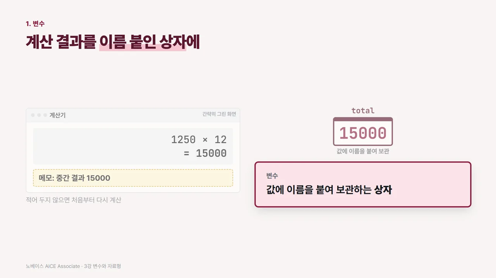
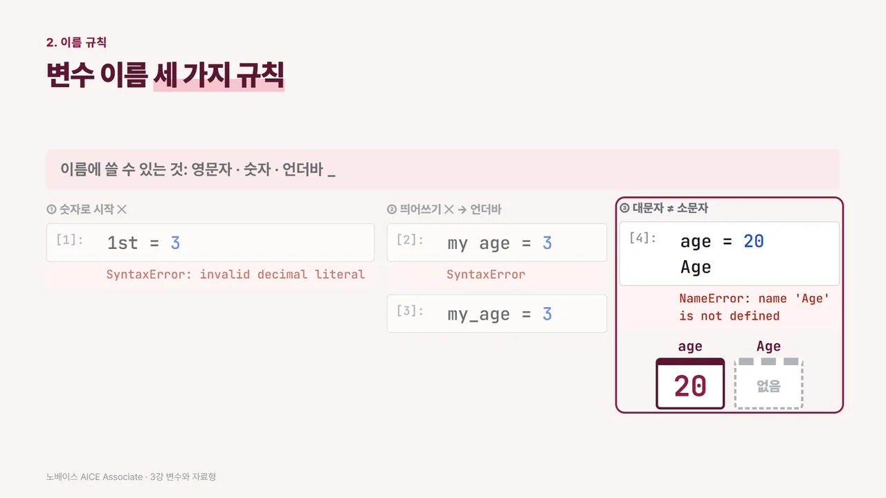
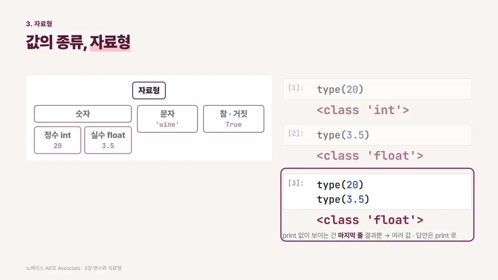
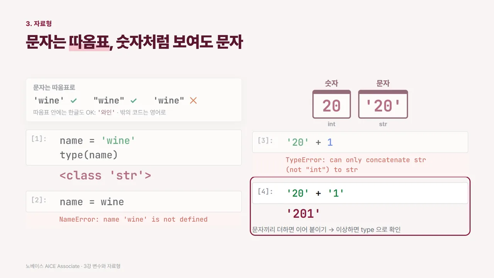
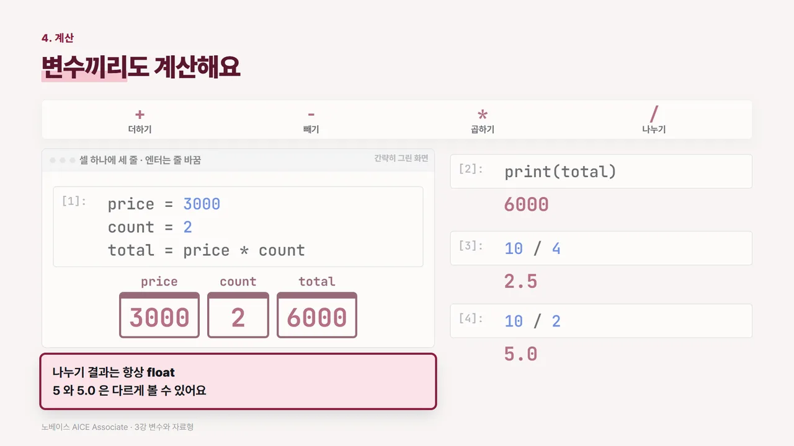
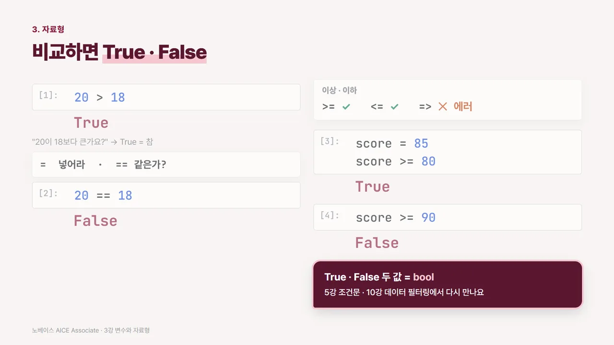
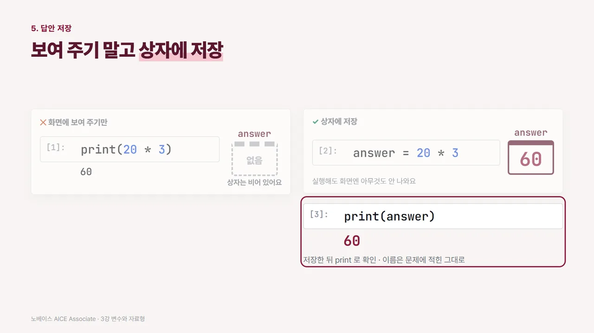

변수와 자료형
3강 영상에서 배운 내용을 읽기 쉽게 정리했어요. 코드의 결과는 모두 실제로 실행한 값이에요. 인쇄하거나 「PDF로 저장」하면 교재처럼 볼 수 있어요.
인쇄 창에서 여백은 「기본값」, 「머리글 및 바닥글」은 끄고 저장하면 쪽마다 여백과 채널 정보가 깔끔하게 들어가요.
01오늘의 핵심
02이 시험에 필요한 파이썬
AICE Associate는 파이썬 문법을 깊이 있게 다루는 시험은 아니에요. 다른 사람이 미리 만들어 둔 기능들을 모아 놓은 것, 즉 라이브러리를 정해진 방식으로 사용할 수 있는지를 중요하게 봐요. 그래서 파이썬은 라이브러리를 불러오고 필요한 기능을 사용할 수 있을 정도로 알면 돼요.
| 필요한 것 | 예 | 배우는 강 |
|---|---|---|
| 값을 이름에 저장하기 | answer = 7 | 3강(오늘) |
| 여러 값을 묶기 | ['A', 'B'] | 4강 |
| 크기 비교하기 | age >= 20 | 3강(오늘) |
| 기능을 부르면서 옵션 채우기 | test_size=0.2 | 6강 |
| 라이브러리 가져오기 | import pandas as pd | 7강 |
반대로 함수를 직접 만들거나 반복문을 길게 작성하는 내용은 시험에서 비중이 크지 않아요.
03변수: 이름 붙인 상자

계산한 값을 나중에 다시 사용하려면 이름을 붙여 보관해야 해요. 예를 들어 계산 결과 15000을 total이라는 이름의 상자에 저장해 두면, 나중에 total이라고만 불러도 15000을 다시 사용할 수 있어요. 이렇게 값에 이름을 붙여 보관하는 상자를 변수라고 불러요.
변수 만들기
등호(=)는 "같다"가 아니라 "오른쪽 값을 왼쪽 이름의 상자에 넣어라"라는 뜻이에요. 그래서 이름은 왼쪽, 값은 오른쪽에 써요.
age = 20
print(age)
이미 값이 들어 있는 상자에 새 값을 넣으면, 이전 값은 새 값으로 바뀌어요.
age = 21 print(age)
20 = age
04변수 이름 세 가지 규칙

이름에는 영문자, 숫자, 언더바(_)를 사용할 수 있어요.
① 숫자로 시작할 수 없어요
1st = 3
② 띄어쓰기 대신 언더바
my_age = 3
③ 대문자와 소문자는 다른 글자
age = 20 Age
05값의 종류, 자료형

상자에 들어가는 값의 종류를 자료형이라고 해요. 시험에서 자주 만나는 자료형은 숫자, 문자, 참과 거짓 세 가지예요.
| 자료형 | 뜻 | 예 |
|---|---|---|
int | 정수: 소수점이 없는 숫자 | 20 |
float | 실수: 소수점이 있는 숫자 | 3.5 |
str | 문자(string 을 줄인 이름) | 'wine' |
bool | 참(True)과 거짓(False) | True |
값의 자료형은 type 이라는 함수로 확인해요. 결과의 class 와 꺾쇠는 신경 쓰지 말고, 가운데 이름만 보면 돼요.
type(20)
type(3.5)
type(20) type(3.5)
06문자는 따옴표로

문자는 반드시 따옴표로 감싸야 해요. 작은따옴표와 큰따옴표 중 아무거나 써도 되지만, 시작과 끝은 같은 따옴표로 맞춰요. 따옴표 안에는 한글도 쓸 수 있어요.
name = 'wine' type(name)
name = wine
따옴표 안의 숫자는 문자
따옴표로 감싼 '20' 은 숫자가 아니라 문자예요. 그래서 숫자 1을 더하면 에러가 나고, 문자끼리 더하면 계산하지 않고 글자를 이어 붙여요.
'20' + 1
'20' + '1'
07숫자 계산

| 계산 | 기호 |
|---|---|
| 더하기 | + |
| 빼기 | - |
| 곱하기 | * (별표) |
| 나누기 | / (빗금) |
계산은 변수끼리도 할 수 있어요. 시험에서도 앞에서 저장한 변수를 가져와 계산하는 경우가 많아요.
price = 3000 count = 2 total = price * count
print(total)
나누기 결과는 항상 float
10 / 4
10 / 2
08비교하면 True · False

두 값의 크기를 비교할 때는 수학 시간에 배운 부등호를 그대로 써요. 파이썬은 참이면 True, 거짓이면 False 로 답해요.
20 > 18
두 값이 같은지 물을 때는 등호를 두 번 써요. 등호 하나는 "값을 넣어라", 등호 두 개는 "같은지 확인하라" 예요.
20 == 18
이상·이하는 부등호 바로 뒤에 등호를 붙여요(>=, <=). 순서를 바꿔 등호를 먼저 쓰면 에러가 나요.
score = 85 score >= 80
score >= 90
score => 80
True 와 False 두 값만 가지는 자료형을 bool 이라고 불러요. 5강 조건문과 10강 데이터 필터링에서 다시 만나요.
09답안은 상자에 저장

예를 들어 "20 곱하기 3의 결과를 answer 에 저장하라"는 문제가 있다고 해 볼게요.
print(20 * 3)
올바른 방법
answer = 20 * 3
print(answer)
10스스로 확인하기
영상의 확인 문제와 같은 내용을 노트북으로 풀 수 있어요. 먼저 스스로 끝까지 풀어 본 뒤에 해설을 보세요.
x = '3'일 때type(x)의 결과는? (정답: str, 따옴표로 감쌌으니 문자)2abc,my_score,Score중 변수 이름으로 쓸 수 없는 것은? (정답: 2abc, 숫자로 시작)